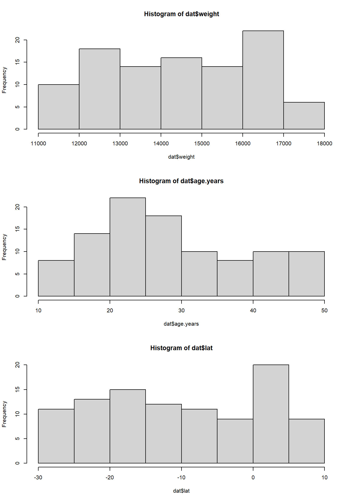
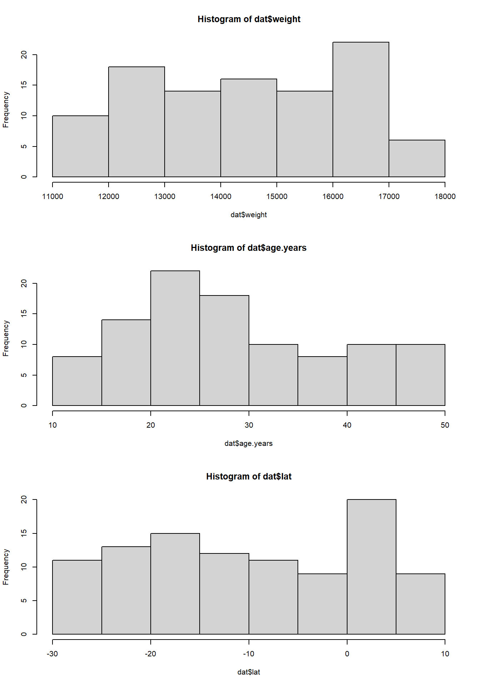
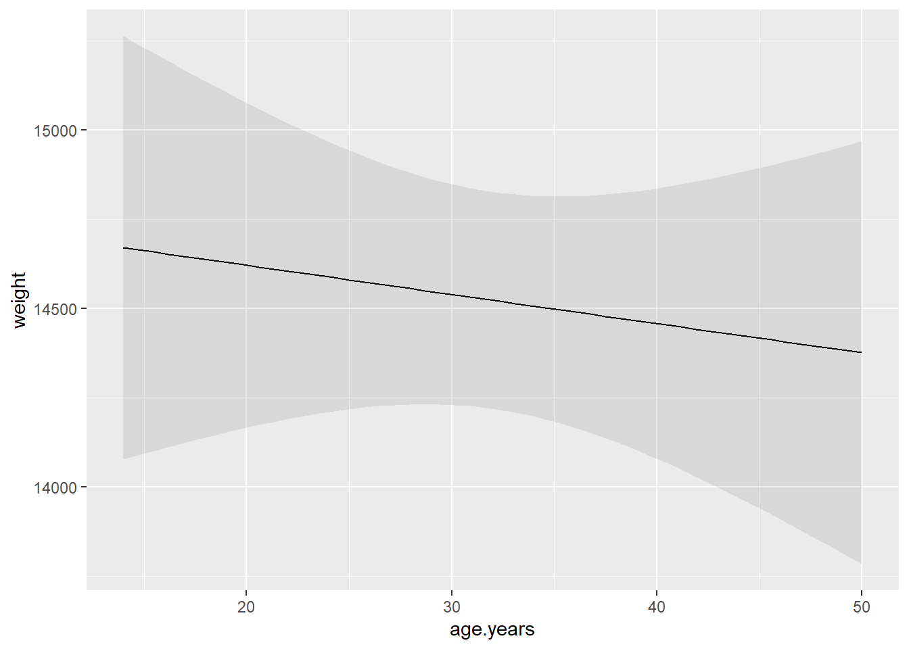
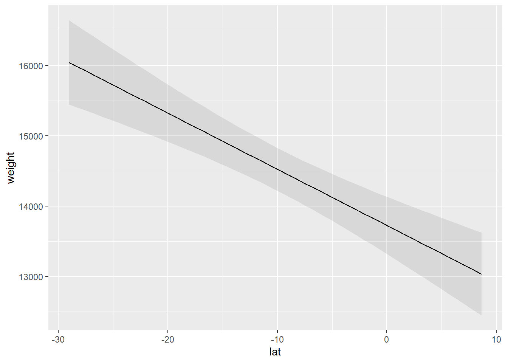
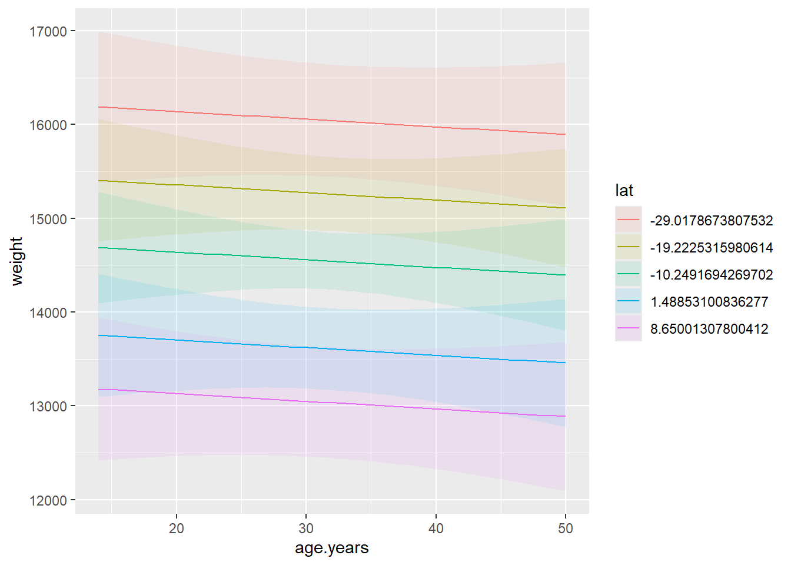
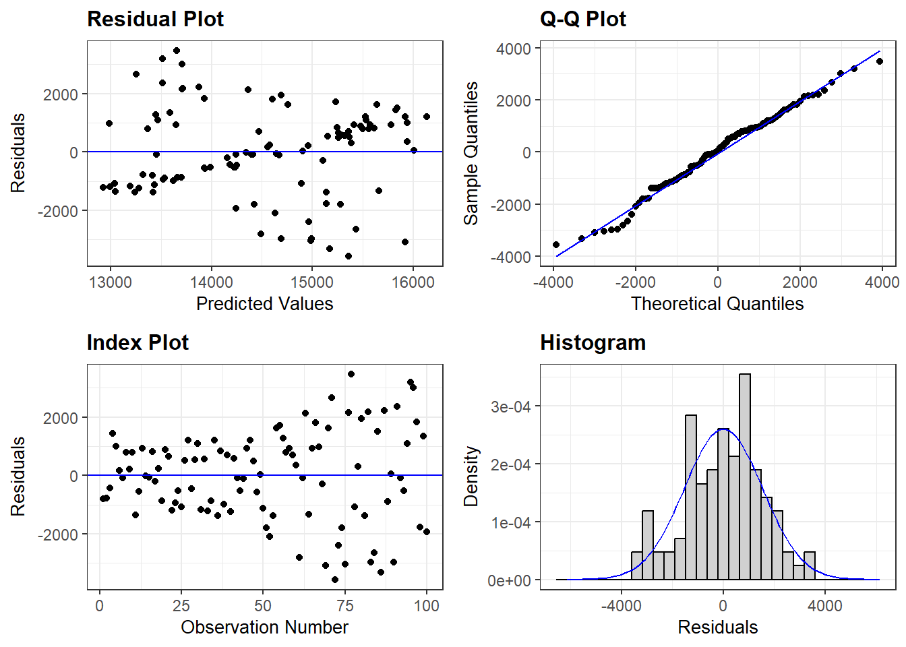

weight age.years lat
1 12615.13 41 2.690077
2 12539.55 50 2.974857
3 13753.97 21 -4.868759
4 17269.26 50 -28.437431
5 16945.27 16 -26.414605
6 14723.24 39 -11.392111
Write a report that presents code and results that evaluates the below hypotheses related to African Elephant weight. The data file is elephant.study.csv. There are three columns, where each row is an individual sampled elephant, indicating the variables of weight (weight in lbs), age.years (age of elephant in years), and lat (mean latitude of the elephants home range).
Throughout, add text around your code and results to allow the reader to follow your thinking. The text should be minimal.

I hypothesize that adult African Elephants (Loxodonta africana) increase in weight as they age because they are more efficient at conserving energy and acquiring high quality resources. As such, I predict that older elephants will weigh more than younger adult elephants. Further, I hypothesize that there is a latitudinal effect on the weight of elephants across the continent of Africa because of the extreme drought in the southern part of their range. I predict that elephants further north will weigh more than elephants further south.
I evaluated these hypotheses by aggregating data on weights of elephants from collaborators. Each individual elephant was weighed in the same manner while being fit with a GPS collar. Each individual had a known age due to longterm demographic monitoring. I derived the mean latitude of each elephants dry season home range.
This data set consists of three columns. The response variable is weight and the two independent variables are age.years and lat.
weight age.years lat
1 12615.13 41 2.690077
2 12539.55 50 2.974857
3 13753.97 21 -4.868759
4 17269.26 50 -28.437431
5 16945.27 16 -26.414605
6 14723.24 39 -11.392111
Looking at the data, we see a good frequency of weights ranging from 11681 to 17345. The independent variables are also well distributed and with relatively similar frequency. To make statements of statistical clarity when it comes to rejcting or no rejecting a null hypothesis of no difference, I use a Type I error (\(\alpha = 0.05\)).
To evaluate my hypotheses, I will consider a linear regression model with an additive effect of age.years and lat. I mean centered the variable age.years so that the intercept can be interpreted in relation to the average weight of elephants when at the equator (lat = 0).
Call:
lm(formula = weight ~ I(age.years - mean(age.years)) + lat, data = dat)
Residuals:
Min 1Q Median 3Q Max
-3567.1 -1084.3 44.6 977.9 3467.1
Coefficients:
Estimate Std. Error t value Pr(>|t|)
(Intercept) 13724.967 207.712 66.077 < 2e-16 ***
I(age.years - mean(age.years)) -8.172 14.431 -0.566 0.572
lat -79.872 13.833 -5.774 9.31e-08 ***
---
Signif. codes: 0 '***' 0.001 '**' 0.01 '*' 0.05 '.' 0.1 ' ' 1
Residual standard error: 1550 on 97 degrees of freedom
Multiple R-squared: 0.2562, Adjusted R-squared: 0.2408
F-statistic: 16.7 on 2 and 97 DF, p-value: 5.842e-07equatiomatic::extract_eq(model)\[ \operatorname{weight} = \alpha + \beta_{1}(\operatorname{age.years\ -\ mean(age.years)}) + \beta_{2}(\operatorname{lat}) + \epsilon \]
\[ \begin{align} \epsilon \sim \text{Normal}(0,\sigma^2) \end{align} \]
equatiomatic::extract_eq(model, use_coefs = TRUE)\[ \operatorname{\widehat{weight}} = 13724.97 - 8.17(\operatorname{age.years\ -\ mean(age.years)}) - 79.87(\operatorname{lat}) \]
Better Model Notation:
For each i\(^th\) elephant, we define out model as,
\[ \begin{align*} y_{i} \sim& \text{Normal}(\mu_{i}, \sigma)\\ \mu =& \beta_{0} + \beta_1 \times (\text{age}_{i}- \bar{\text{age}}) + \beta_2 \times \text{latitude}_{i}. \end{align*} \]
I found the average weight of elephants at the equator (lat = 0) was 13724 lbs. The effect of age on weight was statistically unclear (p = 0.57), not supporting my hypothesis. The estimated effect was relatively small and negative \(\hat{\beta_{1}} =\) -8.17, 95% CI = -36.81, 20.47. I found a statistically clear effect of latitude (p = 0) with an estimated effect \(\hat{\beta_{2}} =\) -79.87, 95% CI = rround(confint(model)[3,],digits=2)`. However, this does not support my hypothesis that elephants would weigh more the further north they lived. Instead, we see that weights decreas with increasing latitude.
plot_predictions(model, condition = list("age.years"))
plot_predictions(model, condition = list("lat"))
The marginal effect plots show the lack of evidence of the effect of age on weight and the support for decreasing weight with latitude. I suggest that this effect is biologically relevant, given that at the extremes in latitudes, we see that the mean weights of elephants is decreased by 18.125%.
plot_predictions(model, condition = list("age.years","lat"))
The joint prediction plot demonstrates the same findings and the assumption of the additive effect between independent variables.
library(ggResidpanel)
resid_panel(model)
The top-right plot shows that the residuals are equally spaced below and above zero and that the variation within predicted values are relatively similar. The top-right plot shows no departre of the empirical quantiles of the residuals compared to theoretical values. Lastly, the bottom-right plot shows the residuals look symmetric and roughly Normally-distributed.
Looking at the leverage of each observation, there appears to be a few potential outliers (measured by Cook’s distance), but overall there appears to be little concern. However, to evaluate the effect of the three most extreme values, I will drop these observations and then assess whether the interpretation of the results change.
Estimate Std. Error t value Pr(>|t|)
(Intercept) 13676.98844 199.24863 68.6428229 4.095285e-82
I(age.years - mean(age.years)) -11.89521 14.25392 -0.8345222 4.061027e-01
lat -88.26940 13.38388 -6.5952033 2.466726e-09We see that the estimated coefficients change relatively little. My interpretation of the results are the same.
I did not find support of either my hypotheses. Rather, I found evidence of a relevant biological effect where the mean weight of elephants decreased with increasing latitude. The total amount of the data that was explained by this model was relatively weak with an \(R^2 =\) 0.26`.
There are several caveats we need to consider.
This report was generated from the R Statistical Software (v4.2.2; R Core Team 2021) using the Markdown language and RStudio. The R packages used are acknowledged below.
| Package | Version | Citation |
|---|---|---|
| base | 4.4.1 | @base |
| equatiomatic | 0.3.3 | @equatiomatic |
| ggResidpanel | 0.3.0 | @ggResidpanel |
| knitr | 1.47 | @knitr2014; @knitr2015; @knitr2024 |
| marginaleffects | 0.21.0 | @marginaleffects |
| rmarkdown | 2.27 | @rmarkdown2018; @rmarkdown2020; @rmarkdown2024 |